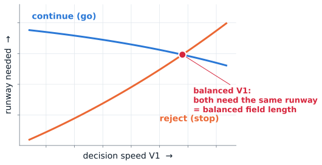
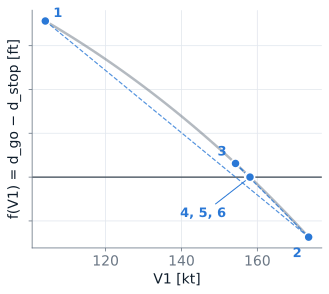
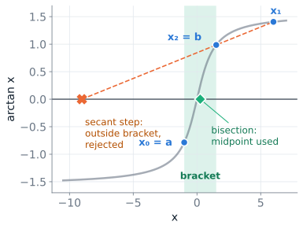
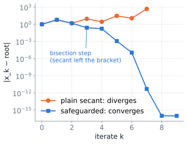
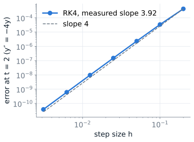
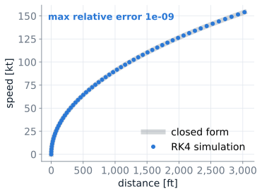

Below the decision speed V1 the crew stops; above it they continue. V1 is chosen so both cases need the same runway, the balanced field length (BFL).

Derivative-free: each f(x) is a full simulation. Order (1 + √5)/2 ≈ 1.618; measured 1.67, 1.60.
Maintain a bracket [a, b] with f(a) · f(b) < 0.
If the secant iterate falls outside [a, b], or the bracket fails to halve over two iterations, take the bisection step (a + b)/2 instead.





| h [s] | BFL error [ft] | run time |
|---|---|---|
| 10 | fails | – |
| 5 | −9.77 | 0.012 s |
| 2 | −0.71 | 0.014 s |
| 1 | −0.02 | 0.017 s |
| 0.1 | < 0.001 | 0.075 s |
| 0.01 | < 0.001 | 0.67 s |
| 0.001 | reference | 6.7 s |